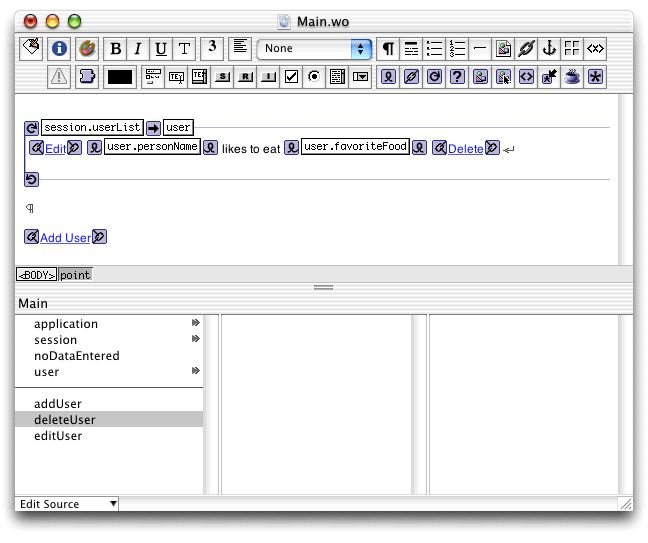

| PATH |

Before you begin, you should make a copy of the ComponentCommunication project and name it SessionState. See "Duplicating the UserEntry Project".
You'll now edit the Main component to show a list of users instead of just one. For that, you'll need to use the NSArray and NSMutableArray classes.
The NSArray represents an ordered collection of objects, much like a Java array (java.lang.Array). NSArray objects are not changeable after being instantiated. (The array itself is not changeable, but the items it contains can be changed if their types are mutable.) The NSMutableArray class (a subclass of NSArray) is intended for arrays that need to grow and shrink dynamically.
The following sections list the NSArray and NSMutableArray methods that you may find useful when manipulating arrays.
objectAtIndex(int
index)countaddObject(Object
anObject)removeObjectAtIndex(int
index)In addition to these methods, the NSArray and NSMutableArray classes have other methods you may find useful. You can examine them using Java Browser.
You can use WebObjects Builder to add an array to the Session class.
Main.wo in
WebObjects Builder.userList instance
variable to session.session in
the Main list.userList.Session.java.The NSMutableArray needs to be instantiated when the Session object is created. It will initially be empty, but you will provide methods to add objects to it.
Edit the constructor of the Session.java class
and add the addToUserList and removeFromUserList methods.
When you're done the file should look like Listing 7-1.
Listing 7-1 Session.java
import com.webobjects.foundation.*;
import com.webobjects.appserver.*;
import com.webobjects.eocontrol.*;
public class Session extends WOSession {
/** @TypeInfo User */
protected NSMutableArray userList;
public Session() {
super();
/* ** Put your per-session initialization code here ** */
userList = new NSMutableArray();
}
public void addToUserList(User newUser) {
userList.addObject(newUser);
}
public void removeFromUserList(User aUser) {
userList.removeObject(aUser);
}
}A WORepetition element is an element designed to iterate over each item in an NSArray, repeating a set of HTML code (possibly including WebObjects elements) once for each item.
A WORepetition has bindings for a list to iterate over (the list attribute)
and for a variable to use to hold each item temporarily as it iterates
over the list (the item attribute).
As the contents of a WORepetition are displayed, the current item
in the list is stored in the placeholder. WebObjects elements within
the WORepetition can refer to this placeholder variable, and the
value of each item is substituted in turn.
You'll wrap the dynamic elements in Main.wo in
a WORepetition. You can use the user instance
variable as the WORepetition's placeholder. After performing the
following steps, Main.wo should
look similar to Figure 7-2.
Main.wo,
delete the first WOConditional element (the one that contains the
text "User information has not been entered."deleteUser method
that returns null.Delete as
the WOHyperlink's caption.action attribute
to the deleteUser method.Main.wo with
a WORepetition.The elements are enclosed in a WORepetition element.
list attribute
to session.userList.Drag
from session.userList to
the first square of the WORepetition.
item attribute
to user.Drag from user to
the second square of the WORepetition.
addUser action
that returns a UserEdit page.Add User as
the WOHyperlink's caption.action attribute
to the addUser method.Figure 7-2 Main.wo with a WORepetition
You can use the UserEdit component to edit an arbitrary user.
To do so, you'll use the editUser method
in Main.java. The method
has additional logic that is not needed in this application. Edit
the editUser method so
that it looks like Listing 7-2.
Listing 7-2 The editUser method of the Main.java class
public UserEdit editUser() {
UserEdit nextPage = (UserEdit)pageWithName("UserEdit");
// Initialize your component here
nextPage.setUser(user);
return nextPage;
}
The editUser method
creates an instance of UserEdit and calls its setUser method
with user as the argument.
The user variable contains
the appropriate object because, when the user clicks Edit, WebObjects
stores the session.userList item
corresponding to the row on which the Edit link is located in the user instance
variable. Remember that the WORepetition's item attribute
is bound to user.
The UserEdit component requires a minor change. The submitChanges method
in UserEdit.java no longer
needs to invoke the setUser method
of the Main.java class
(user information is stored at the session level, which Main can
access through the session object).
Edit the submitChanges method
so that it looks like Listing 7-3.
Listing 7-3 The submitChanges method of the UserEdit.java class
public Main submitChanges() {
Main nextPage = (Main)pageWithName("Main");
// Initialize your component here
return nextPage;
}
This is where it all ties together. Right now, you have a
means of editing a specific user (the UserEdit component); a list
of users, which starts out empty (session.userList);
and a WORepetition that displays your list (in the Main component).
All you need to add is a way to build the list!
You need to edit the addUser method
in Main.java so that
it creates a new User object, adds it to the session's list of
users, and also passes it to the UserEdit page before it is sent
to the Web browser to be edited. Edit addUser so
that it matches Listing 7-4. Notice in particular the code that retrieves the
Session object. The addToUserList method
of that object is then invoked with the newly created User object
as the argument.
Listing 7-4 The addUser method of the Main.java class
public UserEdit addUser() {
UserEdit nextPage = (UserEdit)pageWithName("UserEdit");
// Initialize your component here
Session session = (Session)session(); // get session for current user
User newUser = new User(); // create a new user object
session.addToUserList(newUser); // add new user to session's userList
nextPage.setUser(newUser); // send the new user to UserEdit
return nextPage;
}
The last step is to edit the deleteUser method
in Main.java so that
it removes a user from the list. The method is very similar to the addUser method
described in "Displaying and Editing Lists of Objects". The only difference
is that, instead of creating a new user object and invoking the Session.addToUserList method,
it only invokes the Session.removeFromUserList method
with the User object in the user instance
variable (updated by WebObjects when the user clicks Delete).
Edit the deleteUser method
in Main.java so that
it looks like Listing 7-5.
Listing 7-5 The deleteUser method of the Main.java class
public WOComponent deleteUser() {
Session session = (Session)session();// get session for current user
session.removeFromUserList(user);// remove user from session's userList
return null;
}
© 2001 Apple Computer, Inc.